地政学
セントジョージズは小国グレナダの首都として、東カリブ共同体、英連邦、米州、観光市場を結びます。港と空港の近さが外交、災害対応、輸入物流を支え、島国の主権と外部依存が同じ湾に見えます。海路も政治の条件です。
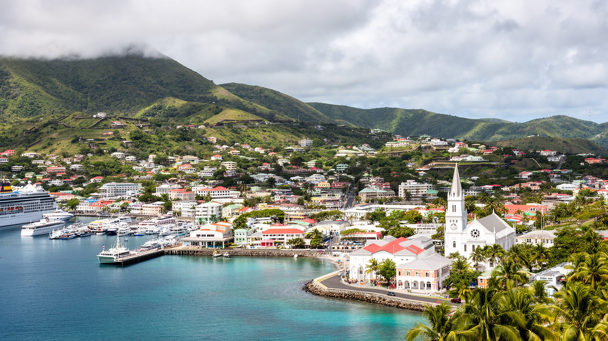
🇬🇩 グレナダ / カリブ海 / World City Atlas
火山島の内湾に議会、港、教会、市場、観光桟橋が重なる小さな首都です。香辛料の島の玄関口であり、カリブ海の気候リスク、移民、教育、観光依存を読み解く場所です。
都市の骨格
セントジョージズは、カレナージュの内湾、丘上の要塞、教会、官庁、市場、フェリー、クルーズ桟橋が近距離に集まる首都です。小さな都市だからこそ、観光と生活の距離が短く見えます。
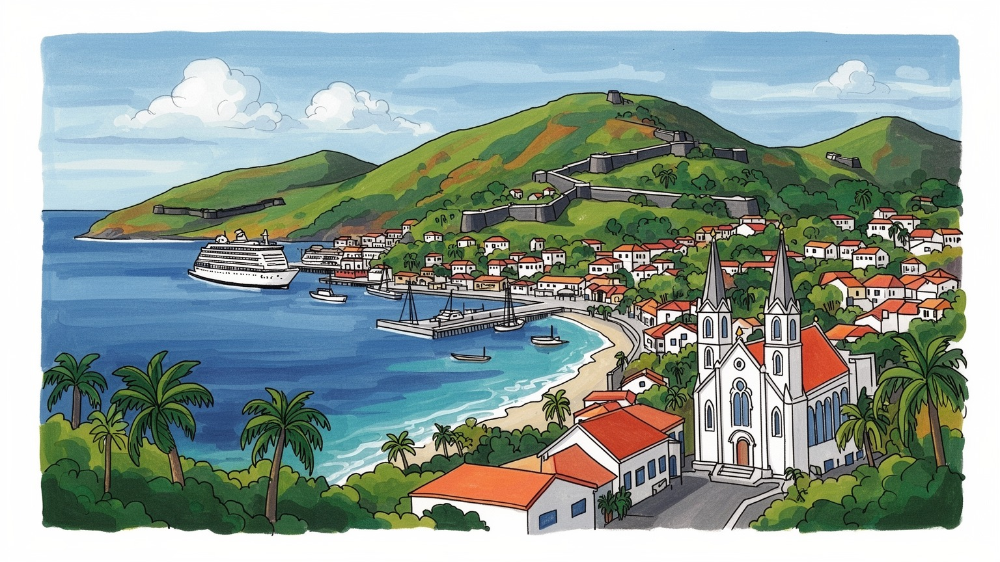
セントジョージズは小国グレナダの首都として、東カリブ共同体、英連邦、米州、観光市場を結びます。港と空港の近さが外交、災害対応、輸入物流を支え、島国の主権と外部依存が同じ湾に見えます。海路も政治の条件です。
観光、行政、港湾、教育、建設、香辛料流通が主要な雇用です。クルーズ客の消費は大切ですが、屋台、タクシー、SNS予約、夜の飲食、物価も重く、ホテルや市場で働く人の稼ぎが都市経済を支えます。雨季も響きます。
教会、学校、市場、カーニバル、スティールパン、スパイス料理が日常を彩ります。カトリック、英国国教会、福音派などの礼拝は地域の支えであり、アフリカ系の記憶と植民地の層も残ります。音楽も祈りも近いです。
港の写真映えと生活の用事が重なる街です。住民はバス、市場、学校、役所、病院を使い、旅行者は要塞や浜辺へ向かいます。混雑、家賃、災害、夜の治安、買い物の値段が小さな距離に集まります。坂道も効きます。
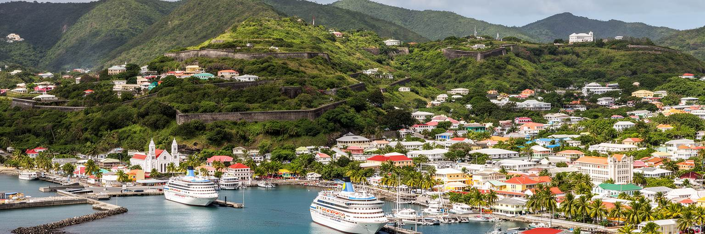
セントジョージズの第一印象は、馬蹄形の内湾と背後の急な丘にあります。カレナージュの水面に沿って商店、桟橋、倉庫、飲食店が並び、その上に教会、要塞、住宅、官庁が段状に重なります。平地が限られるため、街路は曲がり、坂は生活の一部になり、短い距離でも高低差が都市のリズムを作ります。港は観光写真の中心ですが、同時に島へ物資を入れ、人を送り出し、災害時の支援を受ける実用的な入口です。火山島の地形は美しい景観を生む一方、道路整備、排水、斜面住宅、避難経路に制約を与えます。都市を読むには、湾の明るさだけでなく、丘の上に住む人が市場や学校へ下りる日常、雨で水が集まる道、車がすれ違いにくい坂道まで見る必要があります。小さな首都では地形が行政、商業、観光、住宅を近づけ、同時に選べる土地を少なくします。内湾の静けさは、海に開いた小国の脆さと利点を同時に映しています。さらに、港の周囲では歩行者、タクシー、配送車、観光バスが同じ狭い道を使うため、都市計画は大規模な拡張よりも細かな調整の積み重ねになります。坂の上の住宅から湾を見下ろす美しさは、買い物、通院、通学の負担とも表裏一体です。地形は風景ではなく、毎日の時間の使い方を決める条件です。海と丘の距離が短いことは、景観、渋滞、排水、避難を一体で考える必要があるという意味でもあります。
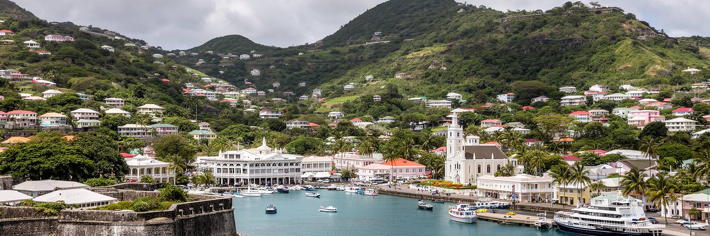
グレナダの首都機能は、セントジョージズの限られた中心部に集まっています。議会、官庁、裁判所、警察、港湾機関、学校、教会、報道が近く、政治は大都市のように遠い制度ではなく、通勤路や市場の会話と結びつきます。小国では政府の決定が観光、輸入価格、公共雇用、教育、災害復旧へすぐ響きます。そのため首都は象徴であると同時に、住民が行政へアクセスする実務の場所です。英連邦の制度、東カリブの地域協力、米国や英国との関係、カリブ海諸国の外交は、この小さな街の官庁を通して生活に接続します。かつての植民地支配や1980年代の政治危機の記憶も、首都の公共空間を読む手がかりです。要塞や官庁を眺めるだけでは、政治都市としての緊張は見えません。公共サービスの待ち時間、学校制度、警備、選挙の掲示、災害後の支援窓口、ラジオ討論やSNSでの反応まで含めると、小さな首都が国家の信頼をどう支えるかが見えてきます。島内の別の教区から来る人にとっても、首都は書類、医療、進学、船便、仕事探しの場所です。行政が混み合えば生活は止まり、災害後に窓口が機能すれば復旧は早まります。政治の近さは、住民が制度を評価する距離の近さでもあります。国家の規模が小さいほど、首都の道路、窓口、通信、記録管理の弱さはすぐ全島の弱さになり、記者の質問も重みを持ちます。
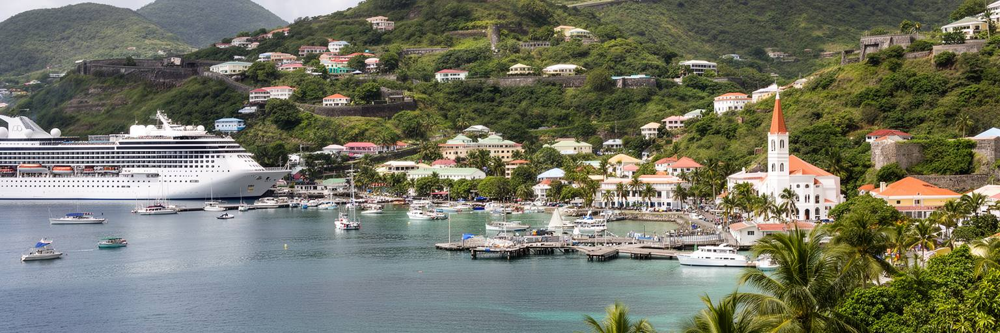
セントジョージズの観光は、クルーズ船、ヨット、ホテル滞在、日帰りツアー、浜辺、滝、香辛料農園を組み合わせて成り立っています。船が着く日は港周辺の店、タクシー、ガイド、市場、土産物店が一気に忙しくなりますが、滞在時間が短い客の消費は都市全体へ均等に届くわけではありません。観光は外貨と雇用を生み、若い人に接客や語学の仕事を開きます。一方で、季節変動、天候、航空便、世界経済、感染症、ハリケーンに左右されやすく、収入の不安定さも残ります。観光客が見る港の明るさの裏には、早朝の仕込み、清掃、警備、送迎、在庫管理、家族経営の店の交渉があります。グランド・アンスの浜辺や要塞の眺望を楽しむときも、その景観を保つ公共投資と現場労働を考える必要があります。観光の価値は、訪問者の満足だけでなく、住民の生活費、海岸へのアクセス、地域の商売が守られるかで測られます。港の再開発や免税店が増えるほど、地元の小商いが見えにくくなることもあります。夜のバー、屋台、音楽イベントが人を引き寄せる一方、帰宅の足や治安への配慮も欠かせません。観光都市の強さは、笑顔の接客だけでなく、働く人が閑散期も暮らせる安定で決まります。港から浜辺へ客を運ぶ動線だけでなく、中心部を歩いて地元店に入る動線を増やせるかも重要です。雨宿りの店も役割を持ちます。
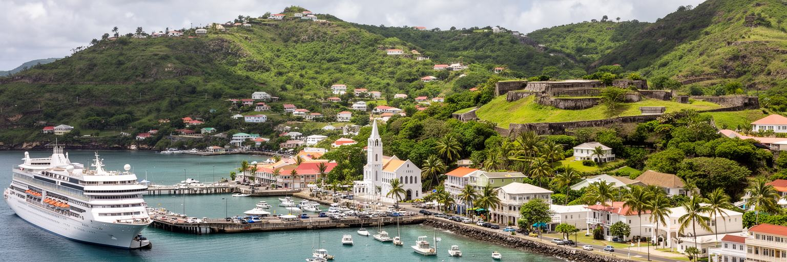
グレナダは香辛料の島として知られ、ナツメグ、メース、シナモン、クローブ、カカオなどが観光イメージにも日常の味にも深く入り込んでいます。セントジョージズは農園そのものではありませんが、山側の集落、加工、輸出、土産物、市場、料理を結ぶ都市の窓口です。市場に並ぶ香辛料は軽い記念品に見えますが、その背後には小規模農家、土地の相続、台風被害、国際価格、品質管理、輸送コストがあります。農業は観光に比べて目立ちにくいものの、島の食文化と地域の所得を支えます。香辛料の匂いは、港町の景観に農村の時間を持ち込みます。都市で売られる小袋は、山の斜面での収穫、乾燥、選別、家族労働の集積です。観光が香辛料を消費するだけで終われば、島の物語は表面的になります。生産者の取り分、災害後の再建、若者が農業を続けられる条件まで見ることで、セントジョージズは港町であると同時に、島内の農村経済を外へつなぐ場所として理解できます。香辛料は国のブランドですが、農家の所得が安定しなければ畑は減り、輸入食品への依存は強まります。都市の市場、学校給食、ホテルの仕入れが地元産品を使うほど、観光と農村は近づきます。港の土産物棚は、島の土地利用と食の将来を映す小さな窓です。香辛料の物語を都市で丁寧に伝えることは、安い記念品ではなく、生産地への敬意を育てることにもつながります。
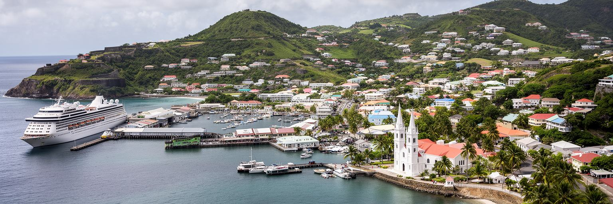
セントジョージズでは、教会が都市の輪郭を作っています。カトリック、英国国教会、福音派などの礼拝所は、丘の上や中心部に立ち、日曜の祈りだけでなく学校、慈善、葬儀、結婚、災害時の支援、移民家族の相談を支えます。宗教は観光名所としての建物ではなく、地域で互いを知る仕組みです。植民地期の制度やアフリカ系住民の歴史は、礼拝音楽、祭り、家族行事、墓地の風景に残ります。小さな首都では、教会関係者、教師、商店主、役所の職員が互いに顔を知ることも多く、助け合いと社会的な視線が同時に働きます。共同体の近さは安心を生みますが、若者、性的少数者、貧困層、移住者にとっては息苦しさにもなり得ます。宗教を読むことは、信仰の強さだけでなく、誰が支えられ、誰が沈黙を求められるかを見ることです。セントジョージズの教会の鐘や歌は、観光の背景音ではなく、都市が災害や不安を乗り越える社会的な網でもあります。学校行事や葬儀に人が集まると、家族を越えた支援の輪が生まれます。反対に、貧困、暴力、依存症、若者の孤立が家庭内に隠れると、宗教組織や地域団体の役割はさらに重くなります。信仰は町の美観ではなく、福祉の不足を補う日常の制度でもあります。礼拝後の会話や寄付の回覧は、行政統計には出にくい支援の流れを作ります。祈りの場所は、災害後に安心を取り戻す場所にもなります。
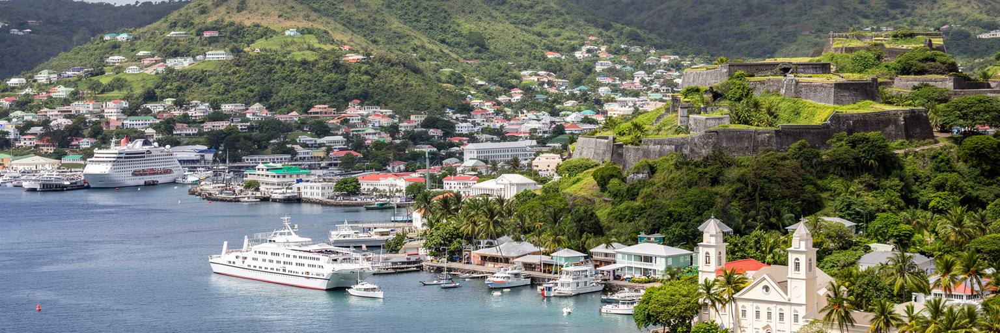
セントジョージズ周辺では、学校と大学が都市の国際性を形作ります。島内の子どもにとって首都は進学、資格、公共職、観光業へ向かう入口であり、郊外の大学や医療教育機関は海外から学生を呼び込みます。教育は小国の上昇機会ですが、学費、交通費、家庭の所得、英語力、留学先とのつながりが進路を分けます。若者の多くは、地元で働くか、カリブの他地域、北米、英国へ移るかを考えます。移民と送金は家庭の生活を支え、同時に技能流出という悩みも残します。首都の港や空港は観光客の通路であるだけでなく、学生、看護師、船員、家族を海外へつなぐ道です。教育機関の存在は賃貸、飲食、交通、医療サービスを活性化しますが、物価や住宅需要を押し上げる面もあります。放課後のバス停、制服姿の買い食い、スマートフォンで見る奨学金情報は、教育都市の身近な風景です。教育は島に残る力と島外へ出る力の両方を生みます。海外学生が増えると、町には新しい消費と国際的な雰囲気が生まれます。しかし、地元の学生が同じ機会を得られるか、卒業後に専門職の仕事が島内にあるかは別の論点です。教育都市としての価値は、外から人を呼ぶ力と、島の若者を育てて戻す力のバランスにあります。図書館、奨学金、職業訓練、実習先がそろうほど、首都は単なる出発点ではなく、能力を島内に残す場になります。
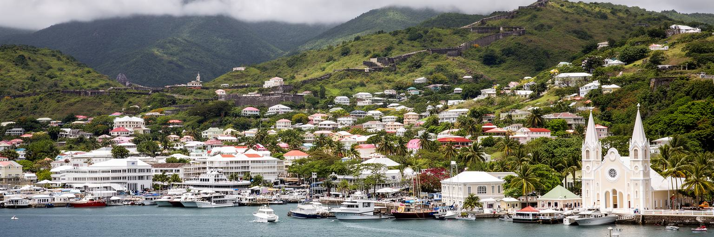
セントジョージズの日常は、港の眺望よりも、坂道の移動、ミニバス、学校の送り迎え、市場の買い物、役所の用事、教会行事、病院へのアクセスにあります。住宅は斜面や狭い道路に沿って広がり、海風の心地よさと、雨水、暑さ、修繕費、交通の不便さが同居します。観光地に近い場所では短期賃貸や宿泊需要が家賃に影響し、住民の住まいが中心から押し出される可能性もあります。輸入品に頼る島では、食料、燃料、建材の価格が家計を左右します。市場で買える地元の魚、果物、香辛料は生活の支えですが、すべてを島内で賄えるわけではありません。小さな都市では家族や近所の助けが重要で、子どもの世話、高齢者の移動、災害後の片づけも地域のつながりに支えられます。一方で、誰もが互いを知る環境は、失業や家庭内の問題を隠しにくくする面もあります。暮らしの質は海の美しさだけでなく、公共交通、医療、手頃な住宅、安定した電気と水、若者が残れる仕事で決まります。港の近くで働く人も、郊外や別教区から通う人も、道路の混雑と燃料費に影響されます。雨の日の坂、暑い午後の待ち時間、停電への備えは、観光パンフレットには出にくい生活の現実です。都市の小ささは便利さであると同時に、選択肢の少なさでもあります。だからこそ、徒歩で済む用事、近所の店、信頼できるバス、涼める公共空間の価値は大きくなります。
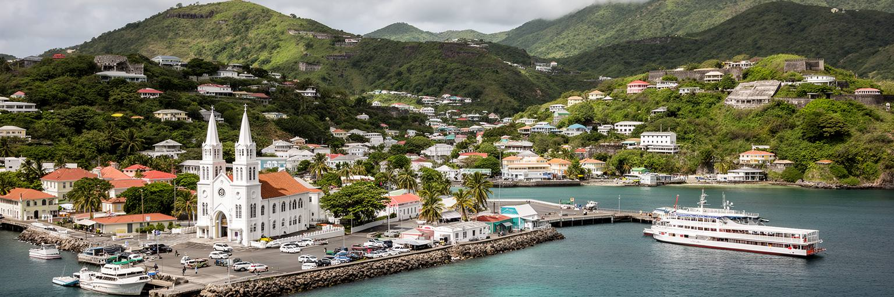
カリブ海の都市であるセントジョージズは、晴れた海の印象と同時に、豪雨、高潮、地滑り、ハリケーン、熱波への備えを抱えています。グレナダは主要ハリケーンの被害を経験しており、屋根、電線、港湾、学校、病院、農地が損なわれると、首都の生活も観光も一気に揺らぎます。丘陵地の住宅は眺望に恵まれますが、排水や斜面の安定が重要です。海岸沿いの道路、桟橋、ホテル、マーケットは、海面上昇や嵐のうねりにさらされます。気候リスクは自然現象だけに限られません。保険に入れるか、家を修理できるか、避難先へ行けるか、情報を受け取れるかによって被害は変わります。観光収入が止まると、雇用、税収、家計、輸入支払いも影響を受けます。防災は堤防や避難計画だけでなく、貧困対策、住宅の補強、学校教育、地域の見守り、港湾物流の冗長性と結びつきます。美しい湾を持つ首都であるほど、海を魅力として使うことと海から生活を守ることを同時に進める必要があります。ラジオ、教会、学校、SNSが避難情報を繰り返し流し、高齢者や旅行者にも届くことが欠かせません。だからこそ、避難所、通信、燃料、食料備蓄、港の復旧手順は都市の競争力を支える基盤です。気候適応は環境政策にとどまらず、住民の家計、学校の再開、農村からの供給、観光の信頼を守る基礎になります。夜の停電対策も重要です。
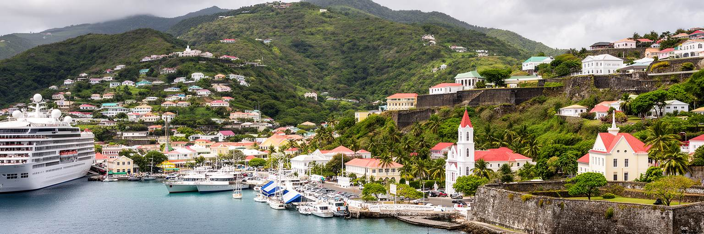
セントジョージズの要塞や古い街路は、ヨーロッパ植民地支配、砂糖と香辛料、奴隷制、軍事拠点、独立後の政治を一つの地形に残しています。港を見下ろす砦は観光の展望台であると同時に、支配と防衛の装置でした。カリブの歴史は美しい海の背景ではなく、先住民の消滅、アフリカ系住民の強制労働、プランテーション、解放後の貧困、移民、政治運動を含みます。グレナダ革命と米国の軍事介入の記憶も、現代の国家意識や外交観に影を落とします。観光地として歴史を語るとき、要塞やコロニアル建築を絵になる遺産としてだけ扱えば、痛みのある記憶は薄れます。学校、博物館、記念碑、家族の語りが、その歴史をどう伝えるかが重要です。セントジョージズを歩くことは、港町のかわいらしさと、帝国、労働、政治的選択の重さを同時に引き受けることです。記憶を隠さずに語るほど、都市の観光は浅い消費から学びの体験へ近づきます。古い建物が修復されるとき、誰の名前が掲げられ、誰の労働が説明されないのかも問われます。奴隷制や植民地行政の跡を、単なる異国情緒として消費しない姿勢が必要です。歴史を丁寧に語ることは、住民が自分たちの過去を取り戻し、訪問者が島を敬意をもって理解するための入口です。港を見下ろす場所で過去を考えると、海は交易路であると同時に、支配と抵抗の記憶を運んだ道でもあったことが分かります。
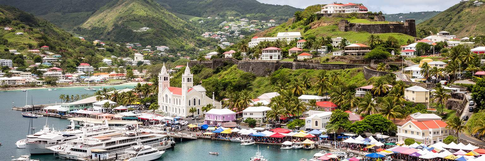
セントジョージズの文化は、食と祭りからよく見えます。市場には魚、根菜、果物、ココア、香辛料が並び、家庭料理にはナツメグやハーブ、唐辛子、魚介、オイルダウンのような島の味が入ります。食は観光向けの商品である前に、家族の集まり、日曜の食卓、学校帰りの軽食、港で働く人の昼食を支える生活文化です。カーニバルや音楽は、植民地支配への反転、アフリカ系の表現、若者の創造性、地域の競争心を含みます。スティールパンやソカの音は、観光客を楽しませるだけでなく、練習場、衣装づくり、屋台、警備、交通規制を動かします。祭りは自由な解放の時間ですが、費用、飲酒、治安、宗教的な価値観との摩擦もあります。都市の文化を読むには、明るい色や音だけでなく、誰が準備し、誰が利益を得て、誰が夜の後片づけをするのかを見る必要があります。食と祭りは、島の歴史を楽しく見せる力を持ちながら、日常の労働と共同体の負担にも支えられています。食材の多くが輸入に頼る時代でも、地元の魚や香辛料を使う料理は島の自立感を保ちます。ラジオで流れるソカ、SNSで拡散する衣装、子どもが真似る踊りは、祝祭を一年中の話題にします。文化を観光商品にするほど、地域の意味を守る工夫が必要です。港の市場で食べる一皿は、農村、漁港、家庭、祭りをつなぐ小さな地図です。
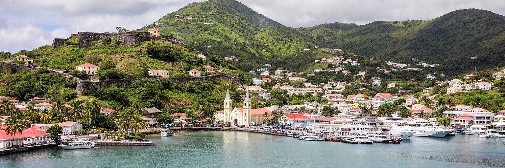
セントジョージズは、規模だけで見れば小さな都市ですが、グレナダの政治、港湾、観光、教育、宗教、記憶、災害対応を濃く集めています。湾に沿った写真映えする景観は、島国の外貨獲得と生活の玄関口でもあります。丘の教会、官庁、市場、クルーズ桟橋、ミニバス、要塞、大学へ向かう道は、それぞれ違う都市の役割を示します。観光は街を世界へ開きますが、輸入依存、季節労働、家賃、気候リスク、若者の流出をすべて解決するわけではありません。香辛料やカーニバルは強い魅力を持ちますが、その背後には農家、店主、演奏者、清掃員、教師、家族の支えがあります。セントジョージズを読むことは、カリブの小国首都が美しい湾をどのように使い、守り、世界経済の揺れに耐えようとしているかを見ることです。都市の価値は大きさではなく、国家の生活がどれだけ近い距離に重なっているかで測れます。この街では、港の光景、祈り、政治、観光、災害への備えが毎日の同じ坂道で交差しています。大都市のような巨大な金融街はありませんが、島全体の判断が集まる密度があります。だからこそ、ひとつの道路、ひとつの桟橋、ひとつの学校の機能が国の暮らしに響きます。小さな首都を丁寧に見ることで、世界都市の尺度を人口やGDPだけに置かない読み方ができます。湾の美しさと生活の緊張を同時に見ることが、この都市を理解する近道です。